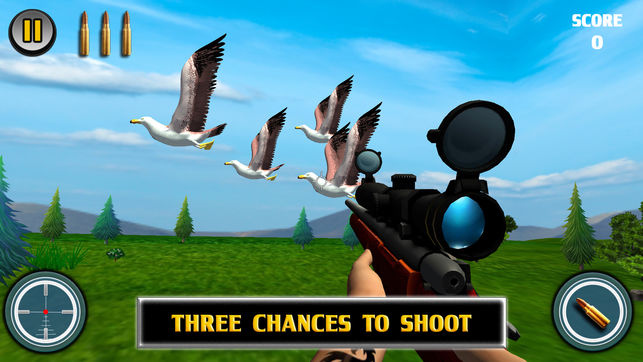
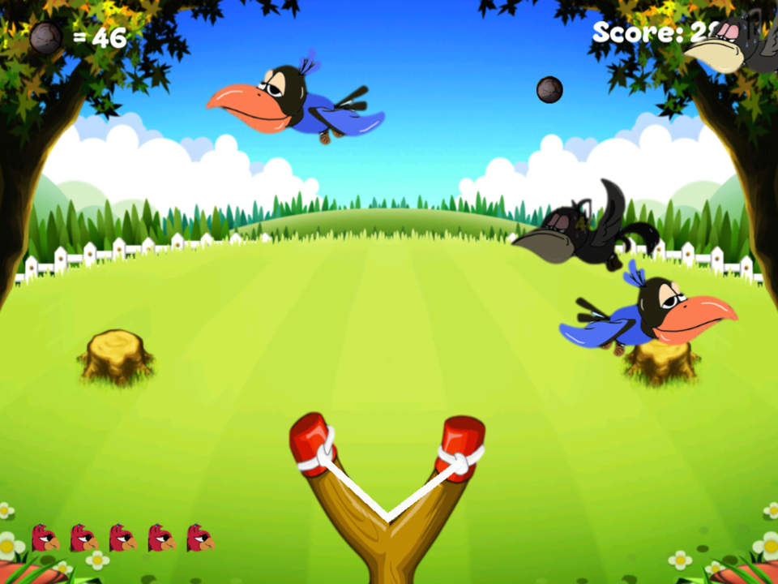
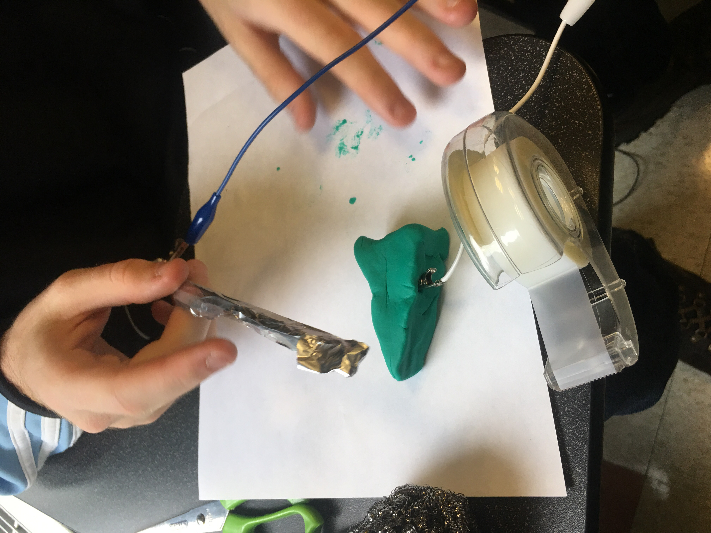

When I first started coming up with ideas for my project, I did not know what exactly to do. I decided that I wanted to do a shooter game of some kind. But what kind? Something simple yet fun, while also being something that a player can play for as long as they want. I instantly thought about Duck Hunt, with the goal being to shoot tons of ducks and level up. I ended up with a hunter shooting game, where the goal was to shoot as many birds as possible. I looked for as many different types of graphics that would fit with the style I was looking for. There were not that many things available, so I did not really have that many options. I luckily found a free video game art site that had awesome bird art, and decided to go with that. I then looked for good sounds to use, something I had the most trouble with. I wasn’t sure what kinds of sounds to use, or what kind of feel I was going for. I knew I wanted something that was not too cartoonish for the sounds, and managed to find some really cool sounds to implement to my game. Besides the actual code to make the game work, I implemented a slider that allows the player to either slow down or speed up the birds' speed. It's an element of my game that not only helps make it more challenging or simple, but also looks really cool in action. I also polished my game down by adding various game states, them being a start state, a play state, a controls state, and a death state. The controls state was a last minute thing, but now that I look back it makes my game look so much more put together than if I were to just put the controls somewhere else on the screen. Overall, I am really proud of my game. I think I implemented a lot of cool elements. I definitely see myself going back and adding more later on, but fo now, I think it's a really fun game that takes me back to old style computer shooter games.
 During class, me and my group of five other students worked on creating a physical controller using the Makey Makey tool. We were given a variety of objects such as pencils, play-doh, aluminum foil, and more. Our task was to create our own keyboard using the Makey Makey and several other objects provided to us. My team decided to make a play-doh left and right arrow key set that could be hit by foil covered pencils. In order to move to the right, you would have to hit the right play-doh arrow with the pencil and vice-versa.

At first we weren't too sure how exactly we wanted the set-up to look. Should we make it more sophisticated or more simple. We opted for an easy to use design that was straight-forward yet cool at the same time. At first we were having some trouble getting it to work. It wasn't until we realized that some of our group member's games used the wasd keys instead of the arrow keys that we finally resolved our main issue. Luckily, one of our group members had his game programmed to play with the arrow keys.
You can see the finished project below!